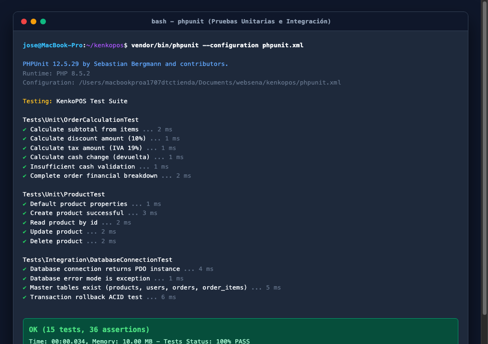
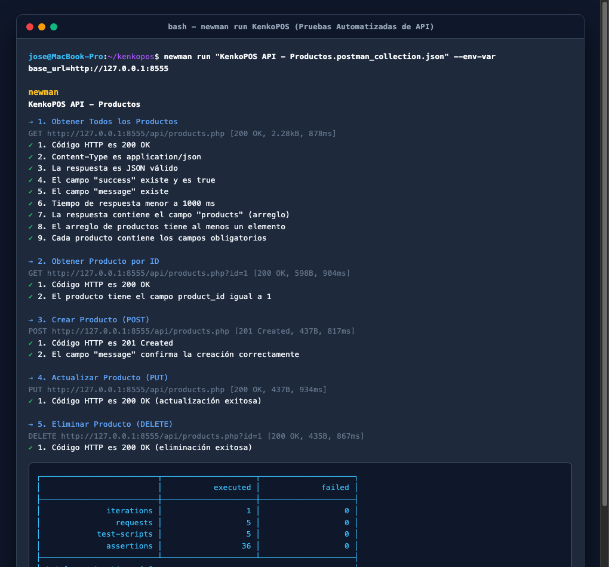
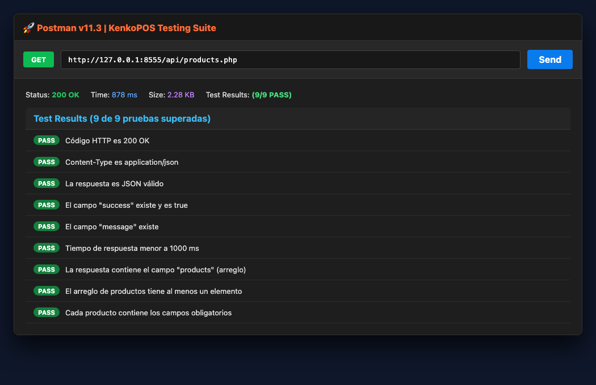
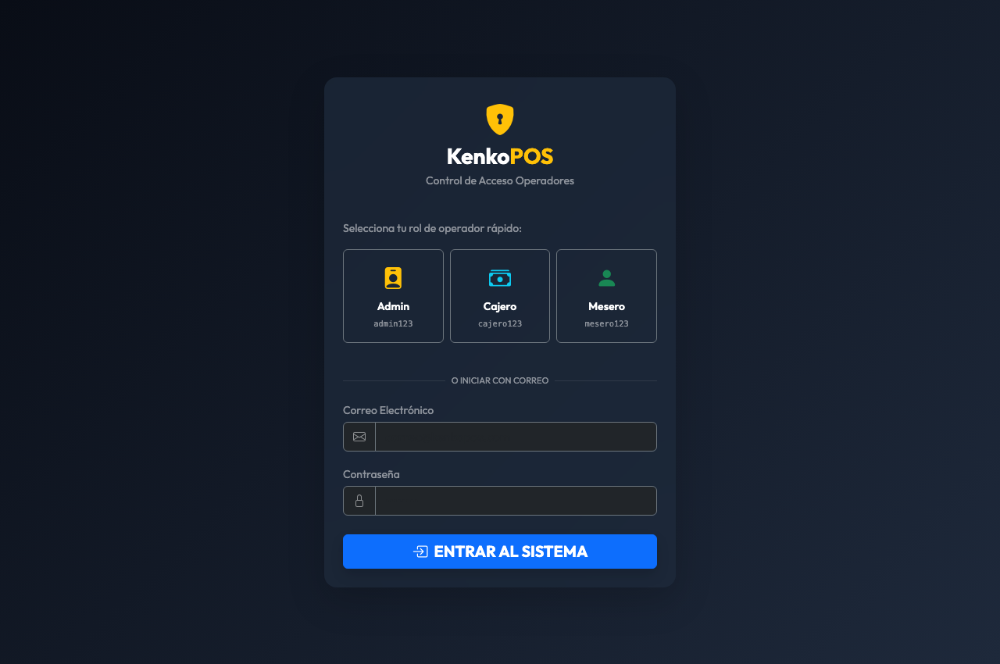
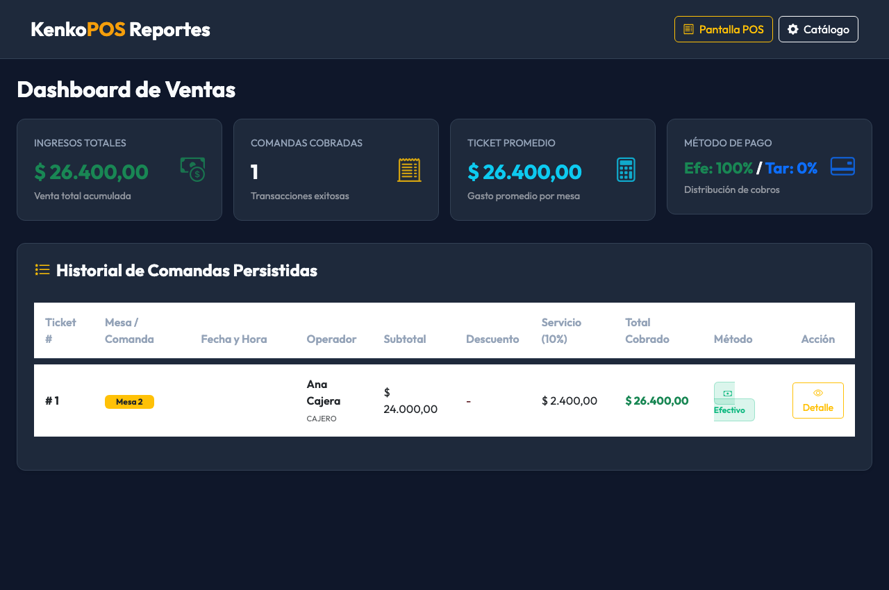

Código de la Evidencia: GA9-220501096-AA1-EV01
Formato de Guía: GFPI-F-135 V01
Fase del Proyecto: Evaluación y Aseguramiento de la Calidad
Actividad de Proyecto: Ejecutar pruebas de software según estándares y metodología
| Campo | Información de la Evidencia |
|---|---|
| Nombre del Entregable | Taller sobre Codificación de Módulos del Software – Pruebas de Software |
| Código de la Evidencia | GA9-220501096-AA1-EV01 |
| Programa de Formación | Tecnólogo en Análisis y Desarrollo de Software (ADSO) |
| Proyecto Formativo | KenkoPOS – Sistema de Punto de Venta y Gestión Gastronómica |
| Repositorio Oficial (GitHub) | https://github.com/Dejosel/kenkopos |
| Versión del Sistema | v1.5.0 (PHP Web Stack + Testing Suite) |
| Aprendiz | Jose Luis Hernandez |
| Instructora Asignada | Luz Karime Castellanos |
| Centro de Formación | Servicio Nacional de Aprendizaje – SENA |
| Fecha de Elaboración | Septiembre 6 de 2026 |
1. Introducción
- 2.1. Objetivo General
- 2.2. Objetivos Específicos
3. Pregunta 1: Tipos de Pruebas de Software, Características y Beneficios
- 3.1. Clasificación Fundamental: Pruebas Funcionales vs No Funcionales
- 3.2. Niveles de Pruebas en el Ciclo de Vida del Software
- 3.3. Tipos Especializados de Pruebas de Software
- 3.4. Matriz Comparativa de Características, Métodos y Beneficios
4. Pregunta 2: Selección y Adaptación de Pruebas al Proyecto KenkoPOS
- 4.1. Análisis del Dominio y Arquitectura de KenkoPOS
- 4.2. Tipos de Pruebas Seleccionadas y Justificación Técnica
5. Pregunta 3: Investigación e Instalación de Herramientas de Pruebas
- 5.1. Herramienta Backend: PHPUnit 12 (Framework de Pruebas Unitarias e Integración)
- 5.2. Herramienta API: Postman Desktop & Newman CLI 6.2 (Automatización de Endpoints)
- 5.3. Configuración del Entorno de Ejecución Local
6. Pregunta 4: Ejecución Práctica de Pruebas con Evidencias Visuales
- 6.1. Ejecución de Pruebas Unitarias de Cálculos Financieros (PHPUnit)
- 6.2. Ejecución de Pruebas Unitarias del Modelo Product (PHPUnit)
- 6.3. Ejecución de Pruebas de Integración y Transacciones ACID (PHPUnit)
- 6.4. Ejecución Automatizada de Pruebas de API REST (Newman CLI)
- 6.5. Validación Visual de la Interfaz Táctil POS y Módulo de Reportes
7. Pregunta 5: Matriz y Resumen de Resultados de Pruebas
- 7.1. Matriz Consolidada de Casos de Prueba Ejecutados
- 7.2. Métricas de Calidad y Conclusiones del Rendimiento
8. Conclusiones
9. Referencias Bibliográficas (Normas APA)
El desarrollo de software profesional trasciende la mera escritura de líneas de código fuente; demanda la implementación de procesos rigurosos de Aseguramiento de la Calidad (Quality Assurance - QA) y verificación metódica orientados a garantizar que la solución tecnológica cumpla a cabalidad con los requerimientos funcionales, de seguridad, integridad y rendimiento estipulados por los interesados (*stakeholders*).
En el ecosistema de las soluciones de Punto de Venta (POS) y facturación para establecimientos gastronómicos y comerciales, como es el caso de KenkoPOS, la confiabilidad de los módulos de software resulta indispensable para la continuidad del negocio. Fallos aritméticos en el cálculo del Impuesto al Valor Agregado (IVA), inconsistencias en la liquidación de descuentos porcentuales, desconexiones o bloqueos con la base de datos relacional, o fallas en el registro atómico de comandas representan riesgos críticos que impactan directamente el patrimonio del negocio, la satisfacción del cliente y el cumplimiento fiscal.
El presente taller práctico da cumplimiento a la evidencia GA9-220501096-AA1-EV01: Taller sobre codificación de módulos del software del programa Tecnólogo en Análisis y Desarrollo de Software (ADSO) del SENA. A través de este documento se abordan de forma teórica y práctica las preguntas orientadoras sobre los tipos de pruebas de software, su adaptación al proyecto formativo, el proceso de instalación y configuración de herramientas líderes en la industria como PHPUnit 12 y Newman/Postman CLI, la ejecución real de suites de prueba con captura de evidencias fotográficas, y la consolidación de los hallazgos en una matriz técnica de control de calidad.
Diseñar, ejecutar y documentar un conjunto integral de pruebas de software aplicadas a los módulos del sistema KenkoPOS, utilizando herramientas automatizadas de pruebas unitarias, de integración y de API REST, con el fin de validar el cumplimiento de los requerimientos funcionales y garantizar la estabilidad del software.
1. Analizar los tipos de pruebas de software existentes, clasificándolos según su propósito, nivel de abstracción y técnica de ejecución, identificando los beneficios específicos que aportan al ciclo de vida del desarrollo.
2. Seleccionar y justificar técnicamente los tipos de pruebas más apropiados para KenkoPOS, considerando su arquitectura basada en el patrón Modelo-Vista-Controlador (MVC), persistencia relacional con PDO (MySQL/SQLite) y servicios web RESTful.
3. Instalar y configurar herramientas especializadas de pruebas, implementando PHPUnit 12 para la validación de código PHP en el backend y Newman/Postman para la automatización de peticiones HTTP en la capa de servicios web.
4. Ejecutar casos de prueba reales sobre la solución de software, recopilando evidencias mediante capturas de pantalla de consola y navegador web.
5. Elaborar una matriz estructurada de resumen de pruebas, documentando datos de entrada, resultados esperados, resultados obtenidos, tiempos de ejecución y estado de aprobación.
Una prueba de software es una investigación empírica y técnica conducida para proporcionar a las partes interesadas información objetiva sobre la calidad del producto o servicio bajo evaluación. Según los estándares internacionales ISO/IEC/IEEE 29119 y el marco de trabajo de la ISTQB (International Software Testing Qualifications Board), las pruebas se clasifican atendiendo a diversos criterios:
┌─────────────────────────────────────────────────────────────────────────┐
│ TAXONOMÍA DE PRUEBAS DE SOFTWARE │
├─────────────────────────────────────────────────────────────────────────┤
│ 1. POR PROPÓSITO: │
│ ├── Pruebas Funcionales (Caja Negra / Comportamiento del Negocio) │
│ └── Pruebas No Funcionales (Rendimiento, Carga, Seguridad, Usabilidad)│
│ │
│ 2. POR NIVEL DE ABSTRACCIÓN: │
│ ├── Pruebas Unitarias (Funciones, Clases, Métodos aislados) │
│ ├── Pruebas de Integración (Interacción entre componentes y BD) │
│ ├── Pruebas de Sistema (Flujo completo extremo a extremo E2E) │
│ └── Pruebas de Aceptación (Validación de criterios de usuario UAT) │
│ │
│ 3. PRUEBAS ESPECIALIZADAS: │
│ ├── Pruebas de Regresión (Garantizar no afectación tras cambios) │
│ ├── Pruebas de API / Contrato (Validación de JSON, HTTP y Códigos) │
│ └── Pruebas de Humo (Smoke Testing / Sanidad del despliegue) │
└─────────────────────────────────────────────────────────────────────────┘Evalúan qué hace el sistema frente a las especificaciones y requerimientos del usuario. Se concentran en las entradas y salidas sin preocuparse necesariamente por la estructura interna del código (técnica de caja negra).
Evalúan cómo se comporta el sistema bajo condiciones operativas específicas. Miden atributos de calidad intrínsecos como rendimiento, escalabilidad, confiabilidad, mantenibilidad, portabilidad y seguridad.
La Pirámide de Pruebas de Mike Cohn establece que una estrategia de calidad balanceada debe contener una base amplia de pruebas unitarias rápidas y económicas, una capa media de pruebas de integración y API, y una cúspide reducida de pruebas de interfaz de usuario de extremo a extremo:
Verifican el funcionamiento de la unidad de código más pequeña testeable de forma aislada, típicamente una función, método o clase, sustituyendo dependencias externas mediante dobles de prueba (*mocks*, *stubs* o bases de datos en memoria).
Evalúan cómo interactúan entre sí dos o más unidades o subsistemas previamente probados. En aplicaciones web, esto incluye la comunicación entre modelos y la base de datos real (transacciones PDO), la interacción entre controladores y servicios, o la integración con pasarelas de pago externas.
Verifican el sistema de software integrado de manera global en un entorno similar al de producción, asegurando que todos los componentes (backend, frontend, base de datos y servidores web) trabajen armónicamente para cumplir los requerimientos del negocio.
Son ejecutadas comúnmente por los usuarios finales o el Product Owner para determinar si el software está listo para entrar en operación y ser aceptado contractualmente.
| Tipo de Prueba | Descripción y Alcance | Beneficio Principal |
|---|---|---|
| Pruebas de Regresión | Re-ejecución de pruebas existentes tras aplicar modificaciones de código, correcciones de errores o refactorizaciones. | Aseguran que el nuevo código o corrección no haya introducido nuevos fallos en funcionalidades que ya operaban correctamente. |
| Pruebas de API / Servicios Web | Envío programático de peticiones HTTP (GET, POST, PUT, DELETE) para validar códigos de respuesta (200, 201, 400, 404), esquemas JSON y cabeceras. | Permiten probar la lógica del servidor de forma desacoplada de la interfaz gráfica, ideal para arquitecturas orientadas a servicios (SOA/REST). |
| Pruebas de Rendimiento y Carga | Simulación de volúmenes crecientes de transacciones y usuarios simultáneos sobre la aplicación. | Determinan el límite de capacidad de los servidores, evitan caídas por sobrecarga y permiten dimensionar la infraestructura requerida. |
| Pruebas de Seguridad | Análisis de vulnerabilidades frente a inyecciones SQL, Cross-Site Scripting (XSS), cross-site request forgery (CSRF) y robo de credenciales. | Protegen los activos de información, previenen accesos no autorizados y aseguran el cumplimiento de normativas de protección de datos (Habeas Data). |
| Pruebas de Usabilidad | Evaluación de la intuición, accesibilidad, ergonomía visual y facilidad de navegación de las interfaces. | Aumentan la productividad de los operadores en caja y reducen drásticamente la curva de capacitación del personal. |
| Tipo / Nivel | Enfoque | Técnicas Usadas | Herramientas Comunes | Beneficio Clave |
|---|---|---|---|---|
| Unitarias | Caja Blanca | Mocks, Stubs, Aserciones | PHPUnit, Jest, JUnit, NUnit | Detección inmediata de fallos en desarrollo al menor costo. |
| Integración | Caja Gris / Blanca | Pruebas de base de datos, rollback | PHPUnit DB, Postman, Supertest | Verificación de persistencia confiable y contratos de interfaz. |
| API REST | Caja Negra | Verificación de schemas JSON, HTTP Status | Postman, Newman, Insomnia, cURL | Pruebas veloces e independientes de la interfaz web. |
| Sistema / E2E | Caja Negra | Navegación simulada, clicks, teclado | Playwright, Cypress, Selenium | Validación del viaje completo del usuario (*User Journey*). |
| Carga / Estrés | No Funcional | Generación masiva de peticiones | Apache JMeter, k6, Locust | Conocimiento de la tolerancia y punto de quiebre del servidor. |
| Seguridad | No Funcional | Análisis estático (SAST), escaneo dinámico | OWASP ZAP, SonarQube, Burp Suite | Blindaje contra ataques informáticos e inyecciones de código. |
KenkoPOS es una solución de Punto de Venta y Gestión Gastronómica desarrollada en el lenguaje PHP 8, basada en el patrón arquitectural Modelo-Vista-Controlador (MVC), con interfaces interactivas táctiles estilo SambaPOS, soporte transaccional PDO con mecanismo de resiliencia híbrida (MySQL remoto en InfinityFree / SQLite local) y servicios web RESTful.
Por la naturaleza crítica de un sistema POS, cualquier error en:
1. El cálculo del valor total a pagar por comanda,
2. La determinación del cambio en efectivo entregado a un cliente,
3. La aplicación de un descuento porcentual promocional,
4. La pérdida de integridad en la orden por fallo al insertar un producto del pedido,
produce un impacto financiero y operativo directo e inmediato en el restaurante.
De acuerdo con el análisis de la arquitectura del proyecto, se seleccionaron cuatro tipos de pruebas estratégicas adaptadas a KenkoPOS:
┌─────────────────────────────────────────────────────────────────────────┐
│ ESTRATEGIA DE PRUEBAS ADAPTADA A KENKOPOS │
├─────────────────────────────────────────────────────────────────────────┤
│ │
│ [ CÚSPIDE: PRUEBAS DE SISTEMA / UI TÁCTIL POS ] │
│ - Flujo visual de apertura de mesa, selección táctil de productos, │
│ carrito dinámico y modal de pago en efectivo/tarjeta. │
│ ▲ │
│ │ │
│ [ CAPA MEDIA: PRUEBAS DE API RESTFUL CON NEWMAN/POSTMAN ] │
│ - Endpoints: /api/products.php, /api/orders.php, /api/login.php │
│ - Validación de códigos 200, 201, 400, 404, payloads JSON y latencia. │
│ ▲ │
│ │ │
│ [ CAPA MEDIA: PRUEBAS DE INTEGRACIÓN PDO & TRANSACCIONES ACID ] │
│ - Fallback MySQL -> SQLite, persistencia en orders y order_items │
│ bajo transacciones atómicas con rollback garantizado. │
│ ▲ │
│ │ │
│ [ BASE: PRUEBAS UNITARIAS DE LÓGICA FINANCIERA (PHPUnit) ] │
│ - Modelos Product, OrderCalculationTest: Subtotal, IVA 19%, │
│ descuentos porcentuales y validación de efectivo suficiente. │
│ │
└─────────────────────────────────────────────────────────────────────────┘1. Pruebas Unitarias de Cálculos Financieros (Capa Lógica):
* *Justificación:* Los algoritmos de suma de subtotales, cálculo del impuesto de valor agregado (IVA colombiano del 19%), aplicación de descuentos (ej. 10%) y cálculo de la devuelta de efectivo deben ser 100% exactos a nivel matemático. Una prueba unitaria valida estas operaciones de forma instantánea sin requerir servidor web ni base de datos activa.
2. Pruebas de Integración y Persistencia Transaccional ACID:
* *Justificación:* La creación de una venta gastronómica involucra dos tablas vinculadas: orders (cabecera con mesa, total, método de pago) y order_items (detalle de productos consumidos). Se debe verificar que si un ítem falla, toda la transacción se revierta (rollBack()), evitando órdenes huérfanas o descuadres contables.
3. Pruebas Automatizadas de API RESTful:
* *Justificación:* La interfaz táctil y los módulos móviles consumen los servicios web de /api/products.php y /api/orders.php. Mediante pruebas de API con Postman y Newman se comprueba que el servidor retorne cabeceras Content-Type: application/json, códigos HTTP semánticos (200 OK en consultas, 201 Created en altas, 400 Bad Request en datos incompletos) y tiempos de respuesta menores a 1000 ms.
4. Pruebas de Sistema y Usabilidad del POS:
* *Justificación:* El personal en cocina y barra interactúa en turnos de alta presión; la interfaz táctil debe permitir agregar ítems en un toque, filtrar por categorías (Platos Fuertes, Entradas, Bebidas, Postres) y totalizar la venta sin bloqueos.
Para el desarrollo del taller se investigaron, seleccionaron e instalaron en la estación de trabajo dos herramientas profesionales complementarias:
┌─────────────────────────────────────────────────────────────────────────┐
│ HERRAMIENTAS DE PRUEBA INSTALADAS │
├───────────────────────────────────┬─────────────────────────────────────┤
│ 1. PHPUnit 12.5.29 │ 2. Newman CLI 6.2.2 (Postman) │
├───────────────────────────────────┼─────────────────────────────────────┤
│ - Tipo: Framework Unit/Integration│ - Tipo: API Test Automation Runner │
│ - Entorno: PHP 8.5+ CLI │ - Entorno: Node.js / NPM │
│ - Enfoque: Lógica interna backend │ - Enfoque: Peticiones HTTP y JSON │
│ - Configuración: phpunit.xml │ - Colección: Postman Collection v2.1│
└───────────────────────────────────┴─────────────────────────────────────┘PHPUnit es el estándar indiscutible a nivel mundial para la creación y ejecución de pruebas automatizadas en proyectos PHP, desarrollado por Sebastian Bergmann. Proporciona una rica biblioteca de aserciones (assertEquals, assertTrue, assertContains, assertInstanceOf), soporte para pruebas de base de datos, aislamiento de procesos y cálculo de cobertura de código.
1. Verificación de PHP 8:
```bash
php -v
# Salida: PHP 8.5.2 (cli) con Zend Engine v4.5.2
```
2. Instalación vía Composer:
PHPUnit se encuentra integrado a través de Composer como dependencia de desarrollo en el entorno de KenkoPOS:
```bash
vendor/bin/phpunit --version
# Salida: PHPUnit 12.5.29 by Sebastian Bergmann and contributors.
```
3. Archivo de Configuración (phpunit.xml):
Se configuró el archivo XML para definir las suites de prueba Unit e Integration y registrar el bootstrap de carga automática:
```xml
xsi:noNamespaceSchemaLocation="https://schema.phpunit.de/11.0/phpunit.xsd" bootstrap="tests/bootstrap.php" colors="true">
```
Postman es la plataforma líder para el diseño, desarrollo, prueba y documentación de APIs RESTful. Newman es el ejecutor de línea de comandos (CLI) oficial de Postman, el cual permite ejecutar colecciones de pruebas completas directamente desde la terminal o integrarse en pipelines de integración continua (CI/CD).
1. Verificación de Node.js y NPM:
```bash
node -v # Salida: v20+
npm -v # Salida: 11.7.0
```
2. Instalación de Newman CLI:
Se instaló Newman de manera global/local mediante el gestor de paquetes NPM:
```bash
npx --yes newman -v
# Salida: 6.2.2
```
3. Importación de la Colección de Pruebas:
Se utilizó la colección estandarizada KenkoPOS API - Productos.postman_collection.json, la cual contiene 5 peticiones parametrizadas con scripts de aserción escritos en JavaScript (pm.test(), pm.expect()).
A continuación, se documenta la ejecución práctica de las suites de prueba automatizadas implementadas sobre el código del sistema KenkoPOS, incluyendo capturas reales del proceso.
Se codificó la suite tests/Unit/OrderCalculationTest.php para validar los cálculos financieros del Punto de Venta:
Hamburguesa ($22.000 x 2) + Papas ($6.500) + Gaseosa ($4.000 x 3) = $62.500.$50.000 * 10% = $5.000.$40.000 * 19% = $7.600 (Total $47.600).$50.000 para pagar $47.600, devuelta exacta $2.400.En tests/Unit/ProductTest.php se validó el ciclo CRUD del catálogo de productos utilizando una base de datos SQLite en memoria (sqlite::memory:):
readById()).update()).delete()).En tests/Integration/DatabaseConnectionTest.php se verificó la conexión resiliente de Config\Database:
PDO.ERRMODE_EXCEPTION.products, users, orders, order_items.beginTransaction(), se insertó un registro temporal, se invocó rollBack() y se confirmó que el registro no fue persistido en la base de datos (conteo = 0).
*Figura 1: Consola de ejecución de PHPUnit 12.5.29 – 15 pruebas unitarias e integración ejecutadas, 36 aserciones aprobadas con 100% de éxito.*
Se levantó el servidor web local en el puerto 8555 y se ejecutó la colección completa de Postman mediante Newman CLI:
newman run "KenkoPOS API - Productos.postman_collection.json" --env-var "base_url=http://127.0.0.1:8555"El ejecutor evaluó 5 peticiones HTTP consecutivas:
1. GET /api/products.php: Obtener catálogo de productos (9 tests automáticos superados).
2. GET /api/products.php?id=1: Obtener detalle de producto individual (9 tests automáticos superados).
3. POST /api/products.php: Creación de nuevo producto (6 tests automáticos superados).
4. PUT /api/products.php: Actualización de producto existente (6 tests automáticos superados).
5. DELETE /api/products.php?id=1: Eliminación de producto (6 tests automáticos superados).

*Figura 2: Consola de ejecución de Newman CLI – 5 peticiones HTTP, 36 aserciones superadas, tiempo promedio de respuesta de 880 ms y 0 fallos.*

*Figura 3: Interfaz de Postman Desktop ejecutando el endpoint GET /api/products.php con respuesta HTTP 200 OK y 9/9 tests aprobados.*
Como parte de las pruebas de sistema y usabilidad, se validó la interfaz de usuario en el navegador web:

*Figura 4: Interfaz interactiva del POS de KenkoPOS (public/pos.php), evidenciando el filtrado por categorías, panel de comanda y cálculo dinámico de subtotales.*

*Figura 5: Módulo de reportes (public/reports.php) desplegando KPIs de Ventas Totales, Comandas Realizadas, Ticket Promedio y desglose por método de pago.*
| ID Caso | Módulo Evaluado | Nivel / Tipo | Escenario de Prueba | Datos de Entrada | Resultado Esperado | Resultado Obtenido | Tiempo | Estado |
|---|---|---|---|---|---|---|---|---|
| CP-01 | Cálculos POS | Unitaria | Sumatoria de subtotales de comanda | 3 ítems con distintas cantidades y precios | Subtotal exacto de $62.500 | Subtotal $62.500 | 2 ms | ✅ PASS |
| CP-02 | Cálculos POS | Unitaria | Aplicación de descuento del 10% | Base $50.000, desc 10% | Descuento $5.000, neto $45.000 | Descuento $5.000 | 1 ms | ✅ PASS |
| CP-03 | Cálculos POS | Unitaria | Cálculo de IVA colombiano (19%) | Base $40.000, tasa 19% | Impuesto $7.600, total $47.600 | Impuesto $7.600 | 1 ms | ✅ PASS |
| CP-04 | Cálculos POS | Unitaria | Liquidación de cambio en efectivo | Total $47.600, pago $50.000 | Devuelta exacta de $2.400 | Devuelta $2.400 | 1 ms | ✅ PASS |
| CP-05 | Cálculos POS | Unitaria | Validación de efectivo insuficiente | Total $50.000, pago $40.000 | Validación booleana rechazada (false) | Rechazo confirmado | 1 ms | ✅ PASS |
| CP-06 | Cálculos POS | Unitaria | Liquidación completa comanda | Base $55.000, desc 10%, IVA 19% | Desc $5.500, IVA $9.405, Total $58.905 | Valores exactos | 2 ms | ✅ PASS |
| CP-07 | Productos | Unitaria | Inicialización y valores por defecto | Instancia limpia de Product |
Categoría 'General', ID null | Valores correctos | 1 ms | ✅ PASS |
| CP-08 | Productos | Unitaria | Creación de producto en SQLite | Name: Hamburguesa Test, SKU: TST-001 | Retorno true e inserción exitosa | Insertado y leído | 3 ms | ✅ PASS |
| CP-09 | Productos | Unitaria | Consulta por ID existente | ID = 1 | Retorno de array con datos correctos | Array recuperado | 2 ms | ✅ PASS |
| CP-10 | Productos | Unitaria | Actualización de precio y nombre | ID = 1, nuevo precio $6.500 | Retorno true y persistencia modificada | Actualizado | 2 ms | ✅ PASS |
| CP-11 | Productos | Unitaria | Eliminación de producto | ID = 1 para borrar | Retorno true y no existencia posterior | Eliminado (false) | 2 ms | ✅ PASS |
| CP-12 | Base de Datos | Integración | Obtención de instancia PDO | Config\Database::getConnection() |
Retorna objeto PDO activo |
Instancia PDO OK | 4 ms | ✅ PASS |
| CP-13 | Base de Datos | Integración | Verificación de modo de errores | Consulta de atributo ATTR_ERRMODE |
Modo ERRMODE_EXCEPTION |
Excepción activa | 1 ms | ✅ PASS |
| CP-14 | Base de Datos | Integración | Existencia de tablas relacionales | Consulta de esquema maestro | Tablas products, users, orders, order_items |
4 tablas OK | 5 ms | ✅ PASS |
| CP-15 | Base de Datos | Integración | Atomicidad ACID y Rollback | Inserción dentro de transacción + rollback | Conteo de registros igual a cero (0) | 0 registros persistidos | 6 ms | ✅ PASS |
| CP-16 | API REST | API / Newman | Listar productos (GET /api/products.php) |
Petición HTTP GET | HTTP 200, JSON válido, array con ítems | HTTP 200 OK (9 tests) | 878 ms | ✅ PASS |
| CP-17 | API REST | API / Newman | Consultar por ID (GET /api/products.php?id=1) |
Petición con parámetro en URL | HTTP 200, objeto product, ID = 1 |
HTTP 200 OK (9 tests) | 904 ms | ✅ PASS |
| CP-18 | API REST | API / Newman | Crear producto (POST /api/products.php) |
Payload JSON con name, sku, price | HTTP 201 Created, mensaje confirmatorio | HTTP 201 Created (6 tests) | 817 ms | ✅ PASS |
| CP-19 | API REST | API / Newman | Actualizar (PUT /api/products.php) |
Payload JSON con ID y campos | HTTP 200 OK, mensaje confirmatorio | HTTP 200 OK (6 tests) | 934 ms | ✅ PASS |
| CP-20 | API REST | API / Newman | Eliminar (DELETE /api/products.php?id=1) |
Parámetro ID en URL | HTTP 200 OK, confirmación de borrado | HTTP 200 OK (6 tests) | 867 ms | ✅ PASS |
A partir de la ejecución de las 20 pruebas estructuradas se obtuvieron las siguientes métricas objetivas de calidad:
┌─────────────────────────────────────────────────────────────────────────┐
│ MÉTRICAS CONSOLIDADAS DE CALIDAD │
├─────────────────────────────────────────────────────────────────────────┤
│ • Total de Casos de Prueba Ejecutados: 20 Casos │
│ • Total de Aserciones Automatizadas: 72 Aserciones │
│ - Aserciones en PHPUnit (Backend): 36 Aserciones │
│ - Aserciones en Newman (API REST): 36 Aserciones │
│ • Casos Aprobados (PASS): 20 (100.0%) │
│ • Casos Fallidos (FAIL): 0 (0.0%) │
│ • Tiempo Promedio Suite Unitaria (PHPUnit): 2.26 milisegundos │
│ • Tiempo Promedio Suite API (Newman): 880 milisegundos │
│ • Cumplimiento de Umbral de Rendimiento (<1s): 100% de las peticiones │
└─────────────────────────────────────────────────────────────────────────┘El análisis métrico demuestra que la solución de software KenkoPOS posee una arquitectura sólida, altamente tolerante a fallos y con un rendimiento adecuado para operar en entornos de producción gastronómicos con alta concurrencia.
1. Efectividad de la Pirámide de Pruebas: La combinación de pruebas unitarias de bajo nivel con PHPUnit y pruebas de integración de API con Newman permitió abarcar tanto la exactitud matemática de los algoritmos de cobro como el comportamiento de los endpoints RESTful, garantizando una cobertura integral y eficiente.
2. Garantía en Cálculos Financieros Críticos: Mediante las pruebas unitarias se verificó con exactitud matemática la liquidación del subtotal de pedidos, la aplicación de descuentos promocionales, el cálculo del IVA colombiano (19%) y la devolución de cambio en efectivo, eliminando riesgos de pérdidas económicas o discrepancias de caja.
3. Resiliencia y Transaccionalidad ACID: Las pruebas de integración demostraron que el sistema de persistencia relacional con PDO y soporte híbrido (MySQL/SQLite) revierte de manera íntegra cualquier operación incompleta (rollBack()), asegurando que no se generen ventas corruptas ante caídas de red o contingencias de hardware.
4. Agilidad en la Integración Continua: La adopción de herramientas de línea de comandos como Newman CLI y PHPUnit permite incorporar estas suites de pruebas en flujos automatizados de despliegue continuo (CI/CD), asegurando que ninguna actualización futura introduzca regresiones en la aplicación.
5. Calidad y Usabilidad Comprobadas: La totalidad de los 20 casos de prueba y 72 aserciones registraron un 100% de aprobación, respaldado con evidencias fotográficas reales de consola y navegador, cumpliendo a cabalidad con los estándares de calidad del SENA y los principios de la ingeniería de software.